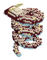

Bestiario › Jefe


Variantes de color
Karybdis la Reina del Maelstrom
Reina del Maelstrom
Hostil Nadador Jefe
Sierpe marina colosal enroscada en espiral como las paredes vivas de un torbellino: escamas azul tormenta, placas de concha en el lomo, aletas cian, runas de rayo y una cabeza coronada arriba del remolino.
450Nivel
575,6Vida
7,91Daño
36Armadura
0Regeneración
7Velocidad
Dónde aparece
| Profundidad | 20 – 120 bloques |
|---|
Efectos de sus ataques
- Empuje · 30 (al golpear)
- Aturdimiento · 2 s (al golpear)
Botín
| Objeto | Cantidad | Probabilidad |
|---|---|---|
 Lanza de Fulgurita Submarina Lanza de Fulgurita Submarina | 1 | 100 % |
 Escudo de Concha de Karybdis Escudo de Concha de Karybdis | 1 | 100 % |
 Tormentita Tormentita | 2 – 4 | 100 % |
Combate de jefe
Escala ×1 · radio de la arena 96 bloques.
- Por debajo del 66 % de vida: velocidad ×1,3 — «¡Karybdis aprieta el torbellino!»
- Por debajo del 33 % de vida: daño ×1,4 — «¡Relámpagos submarinos!»
Archivo de datos: mods/mobs/karybdis.json · tamaño del vóxel 0,5 m · cuerpo de 3 × 4 bloques